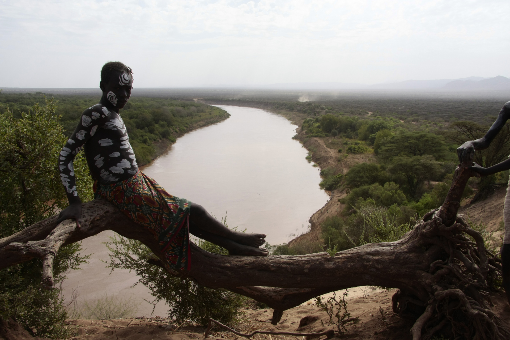
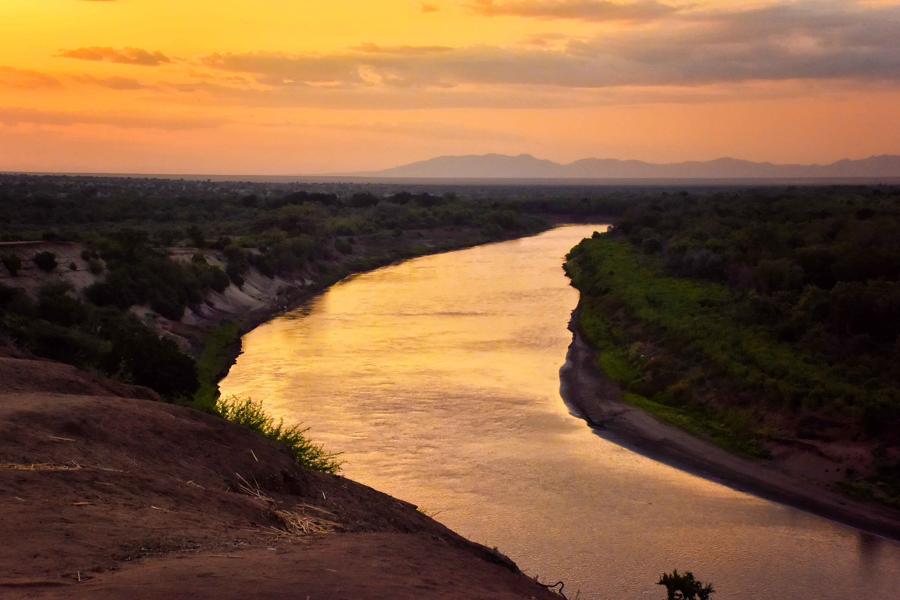
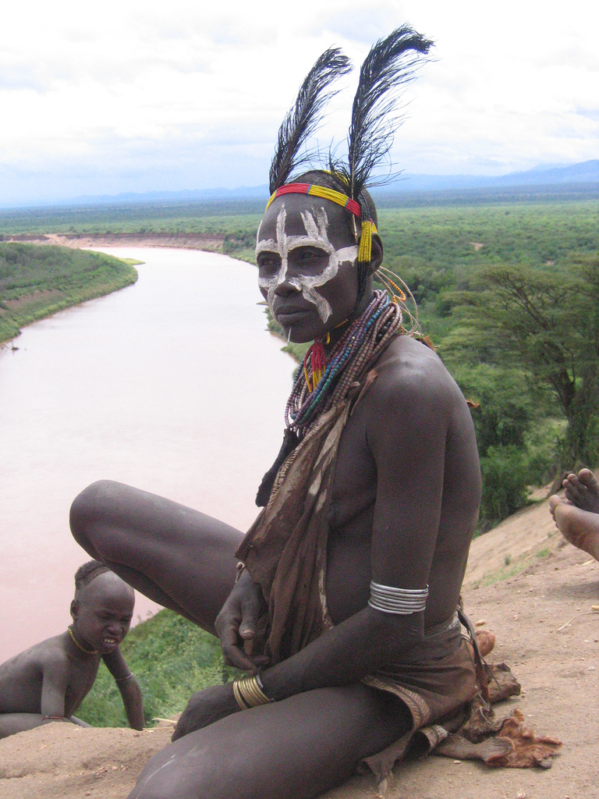
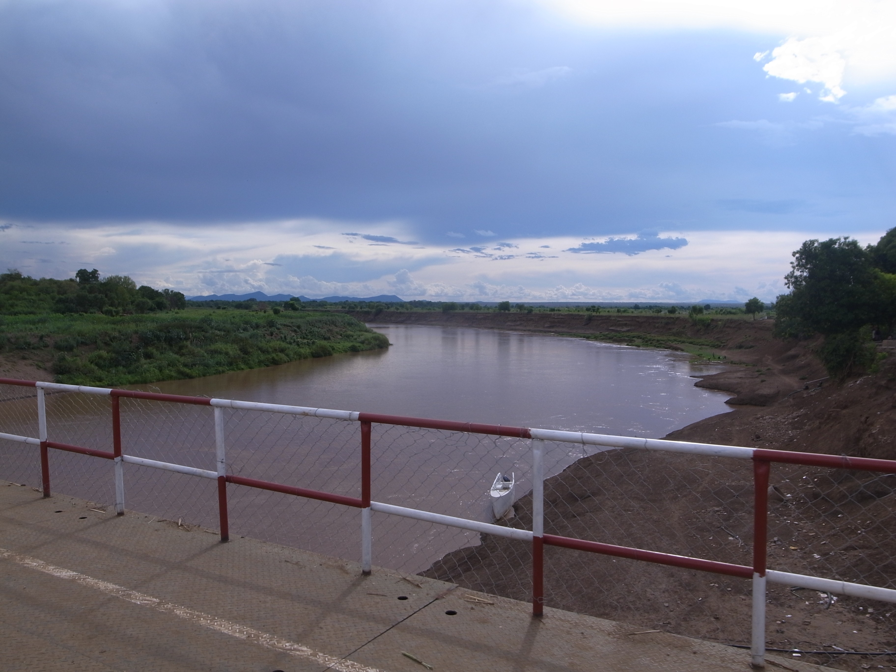

Carved through the sun-baked riftlands of southern Ethiopia, the Lower Valley of the Omo stands as one of Earth’s most vital paleoanthropological sanctuaries, inscribed as a UNESCO World Heritage site in 1980 for its unparalleled ledger of human evolution.
| Location: | South Ethiopia Regional State, Ethiopia (4°48'0" N, 35°58'0" E) |
| Year of UNESCO Inscription: | 1980 |
| Category: | Cultural |
| UNESCO Reference: | 92 |
| Criteria: | (iii)(iv) |
| Coordinates: | 4.8000° N, 35.9667° E |
| Area: | 165 km² (Paleoanthropological core localities) |
Extending southward from the Ethiopian Great Rift Valley to the northern terminus of Lake Turkana, the Lower Valley of the Omo is a masterwork of natural architecture. Over millions of years, episodic volcanic eruptions, river deposition, and tectonic rifting collaborated to create a stacked, highly chronological rock record. These sedimentary sequences serve as a continental archive unmatched anywhere else on Earth, preserving the micro-environmental shifts, faunal successions, and hominin adaptations that defined the Plio-Pleistocene epoch.
The stratigraphic spine of the lower basin consists primarily of three major geological units: the Shungura Formation, the Kibish Formation, and the Usno Formation. Among these, the Shungura Formation is celebrated for its extraordinary thickness—exceeding 700 meters—comprising dozens of volcanic ash layers known as tuffs. Because volcanic tuffs contain potassium-bearing minerals like feldspar and mica, geochronologists have utilized argon-argon (40Ar/39Ar) radiometric dating to calibrate the age of each layer with incredible precision. This radioisotopic lattice allows paleontologists to place fossil finds within an absolute timeline spanning between 3.5 million and 100,000 years ago.
Driven by cyclical shifts in orbital forcing, the environment of the Omo alternatingly oscillated between closed riverine gallery forests, marshy floodplains, and expansive open savannas. Fossilized pollen, phytoliths, and stable carbon isotope analyses retrieved from these strata paint a vivid picture of early hominin habitats. As ancient lake levels expanded and receded, sediments capped buried bone beds, preventing scavenging and weathering, effectively sealing human ancestors and extinct fauna within a protective stone vault until erosion brought them back into the sun.
While the Lower Omo Valley has yielded vast insights into early hominin ancestors, its most world-renowned gift to science is the discovery of the earliest known specimens of anatomically modern Homo sapiens. Found within the member rock layers of the Kibish Formation, the fossilized skulls known as Omo I and Omo II forever transformed the global understanding of human origins. Discovered in 1967 near the town of Kamoya by an expedition led by Richard Leakey, these fragments offered the first indisputable morphological link to living human populations.

For decades, the age of the Kibish hominins remained a subject of intense scientific debate. Initial radiometric dating yielded an age of roughly 130,000 years. However, groundbreaking reinvestigations led by geologist Ian McDougall in 2005, followed by advanced geochemical fingerprinting of volcanic pumice by Céline Vidal in 2022, pushed the age of Omo I back to at least 233,000 years ago. This discovery proved that modern skeletal features—such as a prominent chin, a high vaulted cranium, and reduced brow ridges—had already evolved in East Africa hundreds of thousands of years before our ancestors expanded into Eurasia.
The morphological contrast between Omo I and Omo II is equally fascinating. While Omo I possesses distinctly modern anatomical traits, Omo II exhibits a more primitive, robust cranial shape with thicker skull walls and a lower forehead. The co-existence of these two individuals within the same geological timeframe underscores the mosaic nature of human evolution. Speciation was not a linear march forward, but a complex, branching river characterized by localized variations, co-existing populations, and genetic interactions across the African continent.
Long before modern humans walked the floodplains of the Omo, older lineages of hominins inhabited its ancient gallery forests and savannas. Excavations across the Shungura and Usno formations have yielded thousands of teeth, jaw fragments, and cranial pieces belonging to diverse hominin genera. The deep strata of the Omo provide a continuous evolutionary bridge connecting early terrestrial bipeds to the earliest members of our own genus, Homo.

Among the earliest hominins recorded in the basin is Australopithecus afarensis, the same species made famous by the discovery of "Lucy" in the Lower Valley of the Awash. In the Omo, fossil deposits dating between 3.0 and 3.4 million years ago reveal teeth and mandibular fragments that reflect an adaptable omnivorous diet consisting of both forest fruits and savanna grasses. These finds highlight the evolutionary flexibility that allowed australopithecines to survive in dynamic, shifting landscapes.
As the climate grew cooler and drier around 2.5 million years ago, the hominin lineage split into distinct evolutionary paths. The Omo sediments document the emergence of the robust australopithecine Paranthropus boisei (originally termed Zinj-anthropus), characterized by massive sagittal crests, flared cheekbones, and enlarged molars built for chewing tough, fibrous vegetation. Simultaneously, ancestral human species such as Homo habilis and early Homo erectus emerged in the region, featuring expanded brain capacities and an increasing reliance on stone tools rather than specialized dental apparatuses.
The Lower Valley of the Omo is not merely a graveyard of ancient bones; it is one of the premier open-air workshops of early human technology. Interspersed among the fossiliferous beds of the Shungura Formation are some of the oldest stone tools ever recovered on the African continent. The transition from organic tool use to durable lithic production marked a monumental shift in hominin cognition and ecological dominance.

The earliest stone artifacts in the Omo belong to the Oldowan industrial complex, dating to approximately 2.3 to 2.4 million years ago. These rudimentary tools—primarily water-worn river cobbles fashioned from quartz and basalt—were struck with precise percussion to create sharp-edged flakes and heavy cores. Early hominins used these stone flakes to slice through tough animal hides, sever tendons, and strip meat from scavenged carcasses, unlocking high-calorie animal proteins that nourished their growing brain size.
As million-year intervals unfolded, technological sophistication within the basin evolved. The simple choppers of the Oldowan gave way to the symmetrical handaxes and cleavers of the Acheulean culture, associated primarily with Homo erectus. The deliberate shaping of bifacial tools demonstrates advanced spatial awareness, forward planning, and mental mapping. By examining the micro-wear patterns on stone tool edges and cut marks on fossilized animal bones, researchers have reconstructed early hominin butchery practices, gathering strategies, and group dynamics along the paleo-Omo River.
The scientific awakening of the Lower Omo Valley began in the early 20th century, spurred by tales from European explorers who had encountered fossilized animal bones lying exposed on the desert surface. In 1932, French paleontologist Camille Arambourg spearheaded the first systematic scientific expedition to the region. Working under harsh climatic conditions, Arambourg’s team collected thousands of mammalian fossils, establishing the immense paleontological potential of the rift sediments.

The true golden age of research in the Omo opened in 1967 with the formation of the International Omo Research Expedition (IORE). Conceived as a multi-institutional, international effort, the project brought together American, French, and Ethiopian contingents under the co-direction of F. Clark Howell, Camille Arambourg, and Richard Leakey. Over the course of a decade, the IORE revolutionized field methodology by adopting a holistic, interdisciplinary approach that integrated geology, paleontology, palynology, and sedimentology.
The field methodologies established by the IORE set modern standards for paleoanthropological inquiry across the globe. Thousands of square kilometers were mapped, and over 50,000 individual fossil specimens were logged and cataloged. This massive dataset allowed scientists to chart evolutionary change continuously through time, transforming the Omo into the global benchmark against which all other African Plio-Pleistocene sites are measured.
Beyond its ancient fossil wealth, the Lower Valley of the Omo is home to an extraordinarily diverse tapestry of living cultures. The region represents one of the most linguistically complex areas in East Africa, serving as the ancestral home to over a dozen distinct pastoralist and agro-pastoralist ethnic groups, including the Mursi, Hamar, Karo, Dassanech, Nyangatom, and Bodi.

These indigenous communities have developed sophisticated cultural traditions intrinsically tied to the seasonal dynamics of the Omo River. Historically, their survival depended upon flood-retreat agriculture. When the river overflowed its banks during the annual summer monsoon, it deposited nutrient-rich silt across the floodplains. As the waters receded, farmers planted sorghum, maize, and beans in the fertile mud, supplementing their yields with nomadic cattle herding along savanna pastures.
Each culture within the valley maintains unique ritualistic practices, body artistry, and social structures. The Mursi and Suri are renowned for the clay lip plates worn by women, symbolizing social status and identity. The Hamar are widely recognized for their elaborate Ukuli Bula (bull-jumping) rite of passage ceremonies and intricate hair arrangements colored with red ochre. Meanwhile, the Karo excel at delicate geometric body painting using natural white chalk and pulverized minerals. This living human heritage offers a profound, continuous link to humanity’s deep past, displaying how human societies adapt to arid, volatile ecosystems.
In recent decades, the fragile ecological and cultural equilibrium of the Lower Omo Valley has faced existential threats driven by large-scale infrastructural development. The primary catalyst of change has been the construction of the Gibe III Dam, a colossal hydroelectric plant completed on the upper reaches of the Omo River in 2015. While providing massive energy output for Ethiopia's industrial grid, the dam fundamentally altered the natural hydrological regime of the basin downstream.

The regulation of the river flow effectively terminated the natural flood-retreat cycle, disrupting the traditional agricultural livelihoods of the indigenous populations. Compounding this challenge, vast tracts of land along the lower basin were cleared to establish the state-run Kuraz Sugar Infrastructure Project, alongside commercial cotton plantations. Large-scale irrigation canals have diverted water away from the main channel, causing water levels in Lake Turkana—the world's largest permanent desert lake—to drop significantly, threatening aquatic ecosystems and fishing communities.
In response, the UNESCO World Heritage Committee and international conservation bodies have repeatedly voiced grave concern regarding the state of preservation of the site. Conflicts over resource scarcity between neighboring pastoral groups have escalated as traditional grazing lands contract. Striking a balance between Ethiopia’s national economic development imperatives and the imperative to protect the natural, paleoanthropological, and cultural integrity of the Omo Valley remains one of the most urgent conservation challenges of the 21st century.
Lower Valley of the Awash: Sanctuary of Lucy and Early Hominins
Explore Ethiopia's parallel UNESCO paleoanthropological site, where the famous Australopithecus afarensis fossil "Lucy" was discovered alongside millions of years of human prehistory.
The Lower Valley of the Omo stands as a profound testament to the shared story of humanity. Within its sun-bleached strata lies the physical evidence of our slow, miraculous emergence from early hominin ancestors to anatomically modern Homo sapiens. It is a place where deep geological time is etched into the very soil, offering an irreplaceable window into the evolutionary forces, environmental shifts, and technological breakthroughs that forged our species.
As modern infrastructure and climate shifts rapidly transform this ancient landscape, safeguarding the Omo Valley becomes an ethical duty for all humanity. Protecting its fossil-bearing strata and honoring the living indigenous communities who call this valley home ensures that this sacred cradle of life will continue to illuminate the origins, resilience, and identity of our human family for generations to come.
Why is the Lower Valley of the Omo historically significant?
The valley contains some of the most continuous Plio-Pleistocene fossil deposits in the world, including the earliest known anatomically modern human fossils (Omo I, dated to ~233,000 years ago) and ancient Oldowan stone tools dating back over 2 million years.
When was the site designated as a UNESCO World Heritage Site?
The Lower Valley of the Omo was inscribed as a UNESCO Cultural World Heritage site in 1980 under cultural criteria (iii) and (iv) due to its monumental paleoanthropological discoveries.
Who discovered the famous Omo I and Omo II fossils?
The fossils were discovered in 1967 near Kamoya by an international research team led by paleoanthropologist Richard Leakey during the International Omo Research Expedition.
What indigenous tribes live in the Lower Omo Valley?
The region is inhabited by diverse agro-pastoralist communities, including the Mursi, Hamar, Karo, Dassanech, Nyangatom, and Bodi, each renowned for unique cultural traditions, body artwork, and pastoral lifestyles.
What modern environmental challenges affect the region?
The construction of the Gibe III Hydroelectric Dam and the expansion of commercial sugar and cotton plantations have disrupted the river's natural flood-retreat cycle, impacting indigenous livelihoods and local biodiversity.
Site Name — Lower Valley of the Omo
Year of Inscription — 1980
Key Fossils — Omo I, Omo II, Australopithecus afarensis, Paranthropus boisei
Oldest Modern Human Date — ~233,000 years BP (Omo I)
Access — Fly into Jinka Airport from Addis Ababa, followed by 4x4 vehicle transport into the valley via Key Afer and Turmi.
Best Time to Visit — Dry season from June to September and December to February when roads and river crossings are navigable.
Permits — Required entry permits and local armed scout escorts must be arranged via regional tourism offices in Jinka or local tour operators.
Activities — Cultural village visits, paleoanthropological field tours, wildlife tracking in Omo National Park, photography expeditions.
What to Bring — High-SPF sun protection, malaria prophylaxis, light breathable cotton clothing, sturdy hiking boots, extra cash in Ethiopian Birr for local photography fees.
Etiquette — Always ask permission and agree on customary photographic compensation before taking portraits of local tribal members.
UNESCO World Heritage Centre — Lower Valley of the Omo: https://whc.unesco.org/en/list/92
IUCN World Heritage Outlook — Lower Valley of the Omo: https://worldheritageoutlook.iucn.org/explore-sites/lower-valley-omo
Wikipedia — Lower Valley of the Omo: https://en.wikipedia.org/wiki/Lower_Valley_of_the_Omo
Nature Journal — Age of the oldest known Homo sapiens fossils from eastern Africa (Vidal et al., 2022): https://www.nature.com/articles/s41586-021-04275-8